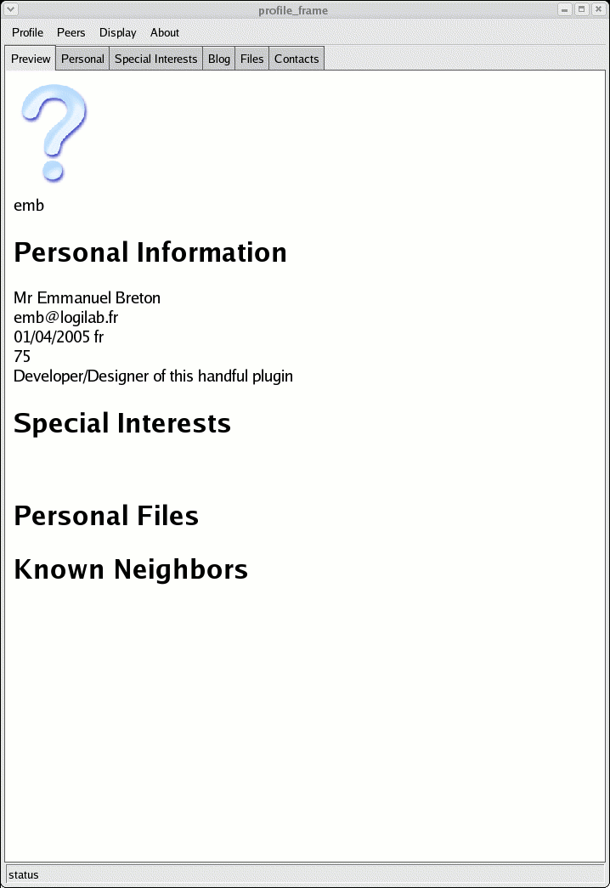
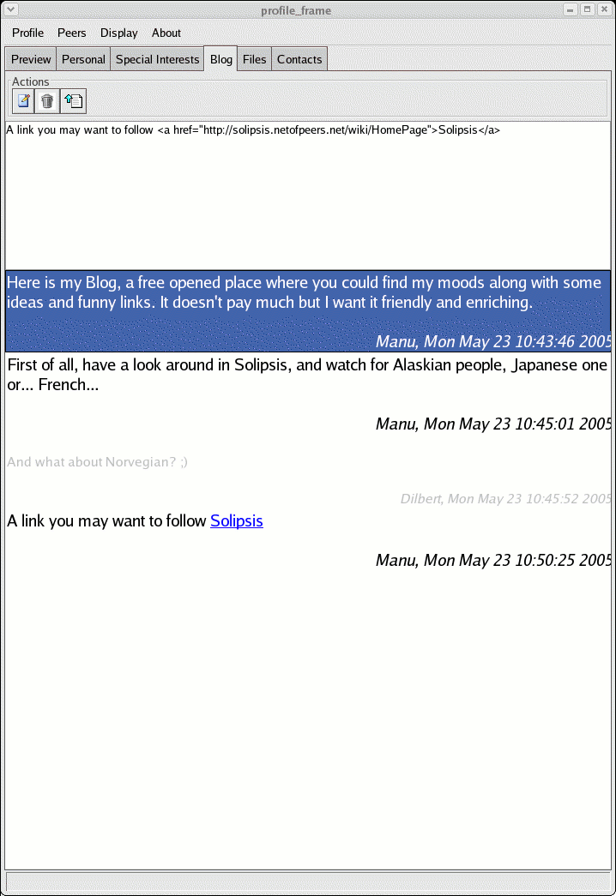
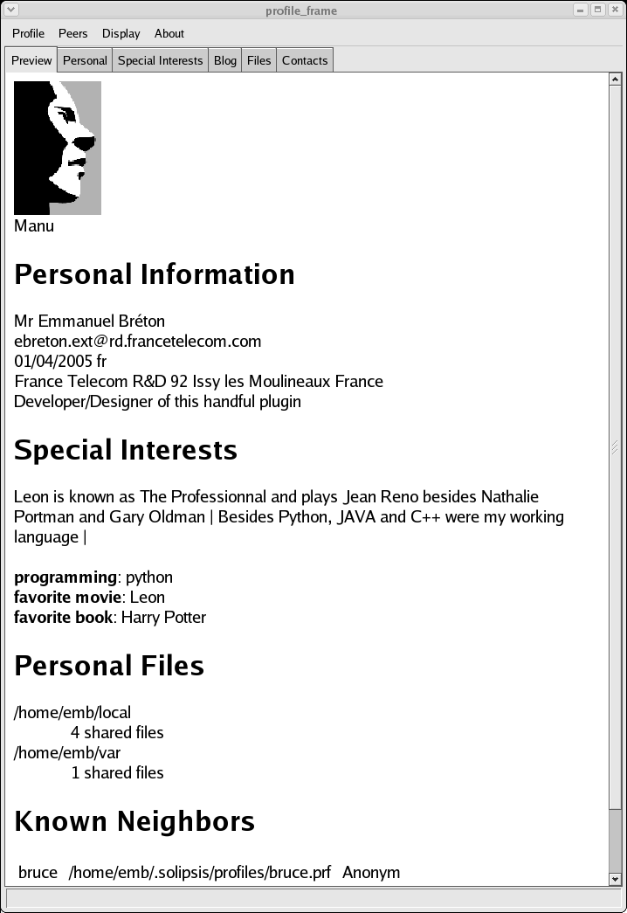

Ce document présente succintement le service de profiles en s'appuyant sur une série de captures d'écran. L'objectif n'est pas d'écrire une documentation exhaustive ni un guide pour l'utilisateur mais simplement de fournir un aperçu de ce à quoi ressemble le service.
A la première ouverture du service, aucune information n'a encore été saisie par l'utilisateur et le service propose donc la vue par défaut suivante:
Elle a pour but de donner une idée à l'utilisateur de la mise en forme du profile. L'onglet courant se nommme 'Preview'. Il est mis à jour à chaque modification de l'utilisateur. L'onglet suivant, 'Personal' est l'onglet d'édition des informations personnelles...
Les données affichées dans la vue précédente sont une compilation de toutes les renseignements saisis dans les différents onglets du module: 'Personal', 'Interests', 'Blog', 'Files' et 'Contacts'. Intéressons nous au premier d'entre eux: 'Personal'
L'onglet affiche une vue par défaut qui ne correspondent pas à l'utilisateur actuel (pout l'instant) mais qui le guide. Saisissez vos informations personnelles: Nom, adresse... Ci-dessous un exemple de saisie:
La mise à jour de l'onglet 'Preview' se fait à la volée. Un retour sur cet onglet avec les informations saisies ci-dessus donne lieu à la capture d'écran suivante:

Vous pouvez bien sur effectuer des va et vient de l'onglet 'Preview' à l'onglet 'Personal' pour vous assurer du bon rendu de votre profile. Notez que rien n'est sauvegardé sur votre ordinateur tant que vous ne sélectionnnez pas 'Save' dans le menu 'Profile'
Le service de profile permet de dépasser la saisie de vos simples coordonnées personnelles. Les captures d'écran suivantes viennent illustrer ce point.
L'onglet 'Special Interests' propose deux modes de saisies: la définiton des centres d'intérêts pat mot-clef et valeur associée, et une définition plus libre par ligne.

L'onglet de 'Blog' permet à l'utilisateur d'éditer son blog et aux autres internautes de commenter ses articles.
Finalement, l'onglet 'Files' permet de sélectionner des fichiers proposés aux autres internautes.

Le dernier onglet est la fenêtre sur les autres utilisateurs. Ainsi l'onglet 'Contact' affiche les informations de profils extérieurs dans le même format que celui utilisé dans l'onglet 'Preview'.

Après ce tour d'horizon, retournons sur le premier onglet, 'Preview' où sont rassemblés tous renseignements saisis jusqu'à présent.
Encore une fois, et pour éviter les mauvaises surprises, notez que les informations saisies ne sont pas sauvegardées sur votre ordinateur tant que vous ne sélectionnnez pas 'Save' dans le menu 'Profile'
